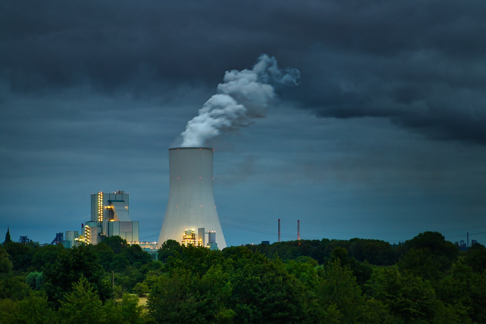

La historia de Biorestaurar Ingeniería comenzó con una visión clara y un propósito firme en la mente de Luis Carlos Heredia Ordoñez, un joven apasionado por el medio ambiente, nacido en Santander, quien desde muy temprano supo que su vocación era proteger la naturaleza y aportar soluciones sostenibles a los problemas ambientales que enfrentaba su región y su país.
esto es algo de lo que hacemos y de nuestra historia
Nuestras Lineas de servicios e historia
Luis Carlos, ingeniero ambiental, siempre fue testigo de cómo los ecosistemas más ricos de Colombia, como los páramos y cuencas hidrográficas, sufrían por la falta de conciencia ambiental, prácticas inadecuadas de manejo de residuos y el impacto de las actividades humanas. Con más de una década de experiencia en sectores clave como Oil & Gas, industrial y agrícola, Luis se fue formando no solo como profesional, sino también como líder con una profunda sensibilidad hacia las buenas prácticas ambientales.
El primer gran reto de Biorestaurar Ingeniería fue diseñar planes de gestión ambiental para municipios rurales en Santander, donde Luis Carlos encontró una falta de infraestructura y políticas claras para el manejo de residuos y recursos naturales. Con paciencia y determinación, él y su equipo iniciaron programas de capacitación en comunidades, educando a agricultores y pobladores sobre agricultura sostenible, cuidado del agua y manejo adecuado de desechos. La respuesta fue positiva, y pronto los proyectos se ampliaron a otros municipios y sectores, abriendo paso a nuevas colaboraciones con entidades públicas y privadas. Luis siempre ha tenido la creencia de que no hay transformación sin educación. Por ello, Biorestaurar Ingeniería no solo se limita a ofrecer consultorías ambientales, sino que además ha liderado procesos educativos en colegios e instituciones, sensibilizando a los más jóvenes sobre la importancia del medio ambiente. De hecho, uno de sus logros más importantes fue el programa "Charlas con el Ingeniero," que no solo conectó a comunidades rurales con la ingeniería ambiental, sino que también donó alimentos a fundaciones y generó conciencia a través de la fotografía, una pasión de Luis.